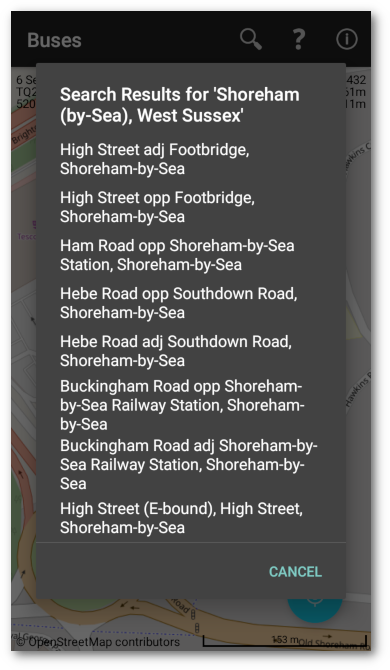
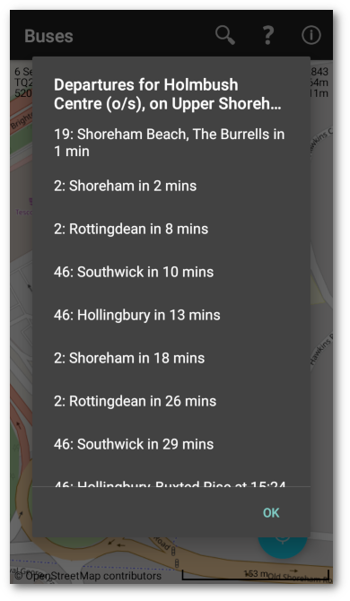

Introduction
This app is a geographical front end to and wrapper around the UK NextBuses web site.
Scroll and zoom the map to find a bus stop and tap the map to get a map and a list of nearby stops. The one you tapped on should be the first on the list. Tap a link to get bus times from that stop.
 
Search
There are several ways of finding bus times:
- Tap the map – This will send a geographic point to the NextBuses web site. This will show a map and list.
- Tap the search button – Type in a street name and town, or postcode and tap the button on the search widget or keyboard. This will show a map and list.
- Tap the search button – Type in the eight character code on the bus stop sign, if it exists, and tap the button on the search widget or keyboard. This will take you straight to the bus times.
Location
The map shows a person icon in a blue shaded circle. The size of the circle indicates the accuracy of the location. If the app thinks you are moving, the person icon is replaced by an arrow. The current time and date, OS six figure reference, and OS twelve figure reference are shown in the left upper corner of the map. The current longitude, latitude, altitude and accuracy are shown in the right upper corner of the map. If the map is panned, these figures will change to the current map centre. After a delay they will revert to the current GPS location.
Permissions
The app will ask for location and file access permissions. The location permission is to find out where you are. The file access permission is so the mapping function can cache map tiles. If map tiles are cached, there is a limited amount of mapping available without internet access, otherwise map tiles will be downloaded every time the app is used.